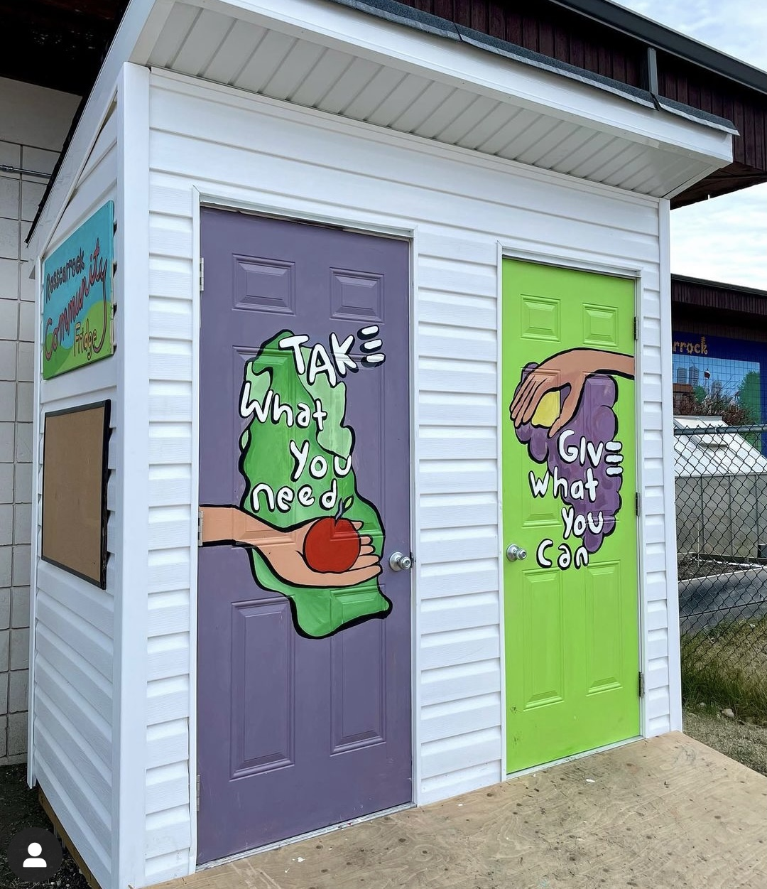

MUTUAL AID | SOLIDARITY
Collective action and community collaboration
Our Mission
Projects: Our mission is to promote collective action and
community collaboration through mutual aid projects in
Mohkinstsis (Calgary). We believe in free access to food and
essential resources. (EXAMPLE TEXT)

Our Projects
Rosscarrock Community Fridge & Pantry
The Rosscarrock Community Fridge is a community-powered project
where neighbours help neighbours, strangers, and any one looking
to access the fridge. As The Hatch, we are completely volunteer
run, with the goal of supporting community members and addressing
food insecurity in our neighbourhoods. Our fridge is a shared
space that provides 24/7, immediate access to food, as well as
essential items for all community members without judgment or
specific requirements. We rely solely on donations to stock and
maintain the community fridge.



Kaffeeklatsch Pantry
Kaffeeklatsch Pantry, a small but mighty pantry at 1205 1 St SW grew
out of a collaboration with Jessica, the wonderful owner of
Kaffeeklatsch, a cafe where coffee and conversation matter. We're
keeping the pantry stocked with non-perishable items for all to
take, and it's always open for donations of popular items like
granola bars, peanut butter, beef jerky, instant noodles, and boxed
or canned soup.
hello